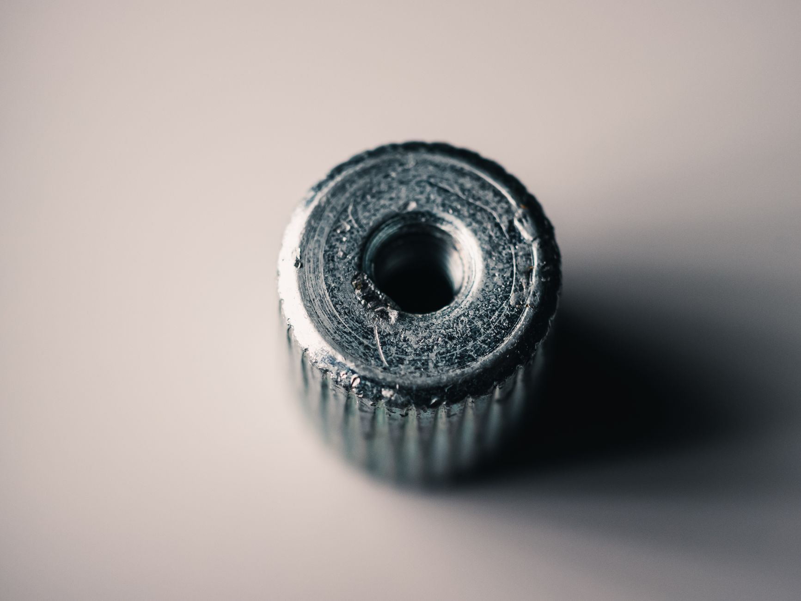

미 에너지부, 핵심광물 인력 양성에 1억 달러 투입…공급망 내재화 가속

미국 에너지부(DOE)가 핵심광물 국내 공급망 강화를 위한 '1억 달러 인력 양성 이니셔티브'를 공식 출범했다고 밝혔다. 이 프로그램은 광물 채굴, 정제, 가공, 재활용 전 분야에 걸쳐 전문 인력을 체계적으로 육성하는 것을 목표로 한다. 몬태나 공과대학(Montana Tech) 등 주요 이공계 대학이 참여 기관으로 이름을 올렸다.
DOE가 이번 사업에 나선 배경에는 미국의 핵심광물 공급망이 단순한 광산 개발이나 수입선 다변화만으로는 해결될 수 없다는 인식이 자리하고 있다. 광물을 채굴하고 이를 반도체·배터리·방산 소재로 가공하는 전 과정에는 고도의 기술 인력이 필요하며, 현재 미국은 이 분야 전문가가 절대적으로 부족하다는 진단이 반복적으로 제기돼 왔다.
DOE 관계자는 '핵심광물 공급망은 땅 밑의 광물을 꺼내는 데서 끝나지 않는다. 이를 제품으로 변환하는 숙련 인력 없이는 중국 의존에서 진정으로 벗어날 수 없다'고 강조했다. 실제로 중국은 희토류·갈륨·게르마늄 등 전략 광물의 채굴뿐 아니라 정제·분리·합금 단계에서도 세계 시장의 70~90%를 장악하고 있다.
이번 이니셔티브는 트럼프 행정부의 핵심광물 탈중국 전략과 맥을 같이한다. 앞서 트럼프 대통령은 국방생산법(Defense Production Act)을 발동해 일부 산업 폐기물에 대한 수출 제한 권한을 부여했고, 이를 통해 국내 재활용 금속 자원을 전략 비축에 활용하는 방안도 추진 중이다. DOE의 인력 이니셔티브는 이러한 하드웨어 정책의 '소프트웨어'적 보완책으로 볼 수 있다.
미국 내 핵심광물 가공 역량의 현실을 보면, 현재 미국은 희토류 분리 공장이 극소수에 불과하고, 갈륨·인듐·게르마늄의 국내 정제 시설은 사실상 전무한 상태다. 반면 중국은 수십 년에 걸친 기술 축적으로 전공정 일관 생산 체계를 갖추고 있어, 단순 설비 투자만으로는 격차를 좁히기 어렵다는 분석이 지배적이다.
이번 이니셔티브와 연계해 DOE는 대학-기업-정부 삼각 협력 모델을 강조하고 있다. 몬태나 공과대학을 비롯한 광업·야금 특화 대학들이 커리큘럼을 현장 맞춤형으로 재편하고, 광물 기업들이 인턴십과 취업 연계 프로그램을 제공하는 구조다. 에너지부는 이를 통해 향후 5년간 핵심광물 분야 신규 인력 1만 명 이상을 배출한다는 목표를 세우고 있다.
한국 입장에서도 이번 움직임은 예의주시해야 할 대목이다. 미국이 공급망 자국화를 가속할수록 핵심광물 중간재·가공품 시장에서 한국 기업들이 경쟁해야 할 환경이 달라질 수 있기 때문이다. 다만 단기적으로는 미국의 기술 인력 부족이 지속되는 만큼, 한국 기업들이 가공·정제 분야에서 미국 현지 파트너 역할을 맡을 기회도 열려 있다.
지질연·KOTRA 등 국내 기관들도 핵심광물 공급망 위기 대응 협력을 강화하고 있다. 업계 전문가는 '미국이 인력까지 투자하며 공급망을 내재화하려는 것은 중장기 전략'이라며 '한국도 희소금속 가공 전문 인력 육성 정책을 지금부터 준비해야 한다'고 조언했다.
이번 DOE 이니셔티브는 e-스크랩(전자 폐기물) 재활용을 전략 광물 자원으로 활용하는 방향도 포함하고 있다. 미국 내 e-스크랩에는 금·은·구리·팔라듐·인듐 등 고가 금속이 대량 함유돼 있어, 도시광산(urban mining) 기반의 국내 조달이 현실화될 경우 수입 의존도를 상당 부분 낮출 수 있다는 분석이다.
글로벌 핵심광물 공급망 경쟁은 이제 단순한 외교·무역 전쟁을 넘어 기술 인력과 교육 인프라 경쟁으로까지 확전되고 있다. EU도 '핵심원자재법(CRMA)'에 인력 양성 조항을 포함시킨 바 있으며, 일본도 희소금속 전문 인력 국가 인증 제도 도입을 검토 중이다.
DOE는 이번 1억 달러 외에 별도 예산으로 스칸듐·바나듐·인듐 등 초희소 금속 정제 기술 R&D 지원도 병행할 방침이다. 업계에서는 이번 이니셔티브가 미국 핵심광물 공급망 독립의 진짜 '마지막 퍼즐'이 될 수 있다고 평가하고 있다.
향후 시장 전망과 관련해 핵심광물 전문 리서치 기관들은 미국의 인력·인프라 투자가 2028~2030년 이후에야 실질적인 공급 확대로 이어질 것으로 보고 있다. 그 전까지는 동맹국 기반의 수입 다변화와 재활용 확대가 병행될 수밖에 없으며, 이 과정에서 한국·캐나다·호주 기업들의 역할이 커질 것으로 전망된다.